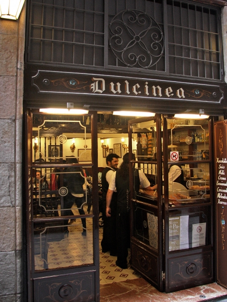

Qui visite l'Espagne sans goûter aux traditionnels Churros con Chocolate ? Ces beignets longs au sucre que l'on trempe dans un délicieux chocolat chaud bien épais et crémeux.

Et pour ne pas se tromper, on connait une adresse incontournable des catalans. Une adresse où vous pourrez vivre pleinement cette expérience purement espagnole, au milieu d'une clientèle de locaux. Et on vous le garantit, les churros y sont délicieux !
Rendez-vous au Granja Dulcinea ! Une adresse bien cachée dans une petite rue du Gotico, à deux pas de l'Eglise de Santa Maria del Pi. Dans une ambiance traditionnelle et conviviale, les serveurs vous acceuillent pour un petit déjeuneur comme à la maison.

Granja Dulcinea
Carrer de Petritxol, 2
08002 Barcelona
Et si jamais vous vient l'envie de le refaire à la maison à votre retour de vacances... Voici une petite recette !